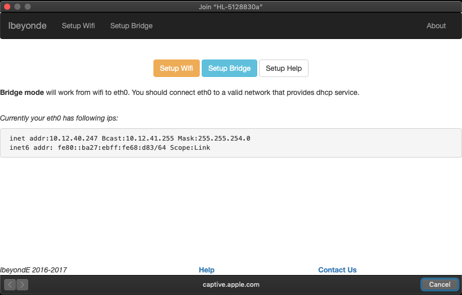
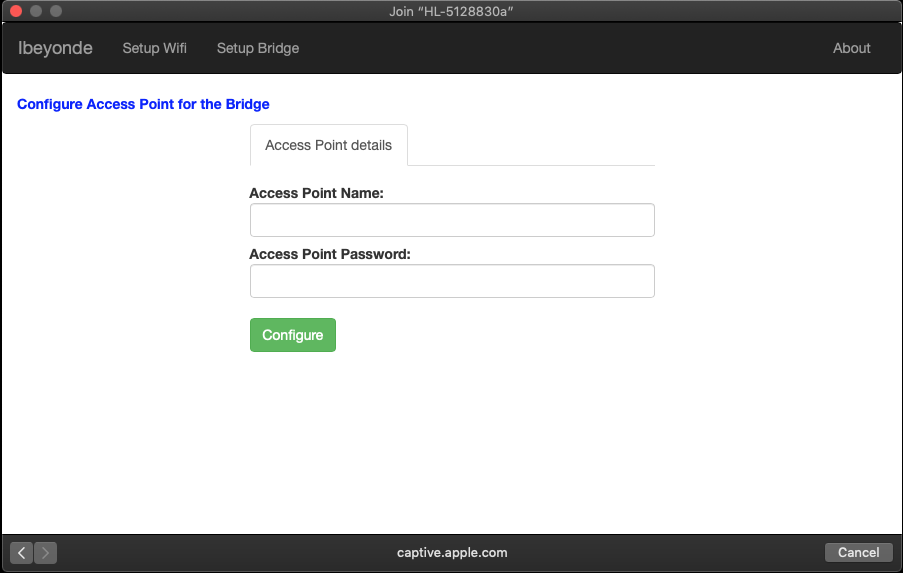

Introduction
Bridging your network is a method to share your network connection between two computers. Out here we are focusing on a specific use case, i.e., how to share wired internet as an access point using a Raspberry Pi (Model B+) Bridge. Especially in offices, we have wired internet available at each desk. With office Wifi secured with weird authentication schemes, it may just be convenient to have your wifi network to which you can connect your mobile devices. The following figure shows how such a Raspberry Pi wifi bridge may look:
Raspberry Pi Model B+ based wifi bridge
In the above picture, the wired network is connected to the raspberry pi using the ethernet cable. The wifi dongle advertises the hotspot that you can connect to and enjoy the wired internet over wifi. For more information do get in touch.
Raspberry Pi Bridge Configuration
On booting with the above image, your Raspberry Pi will be ready for configuration. All you need to do is connect to the hotspot that Raspberry Pi is publishing, and you will see the following menu:
Access Point Default Setup Page
Click on the "Setup Bridge" Button, and this will take you to the following page:

Input the SSID and password for the access point and press the button that says "Configure". It will take about a minute to configure and advertise that access point. On connecting your computer or mobile device to that access point, you will enjoy internet access.